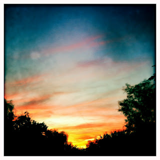

Recovered weblog entry
Ripple and coalesce

As remarkable as the Sonoran sky is, I'd like to pull away from this horizon and see what waits for me. Just for a bit, you see. This arid clime always brings me back regardless. Lens: John S
Film: Blanko